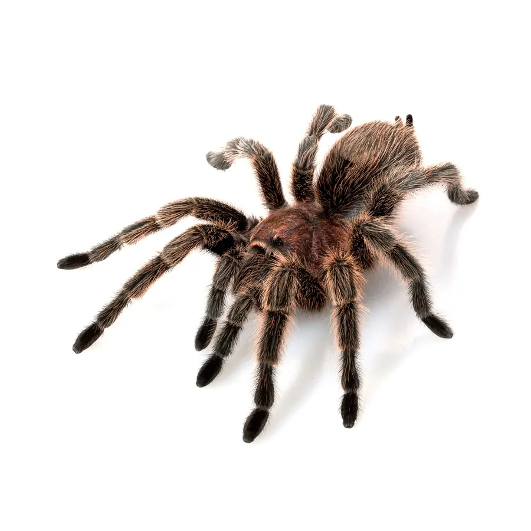
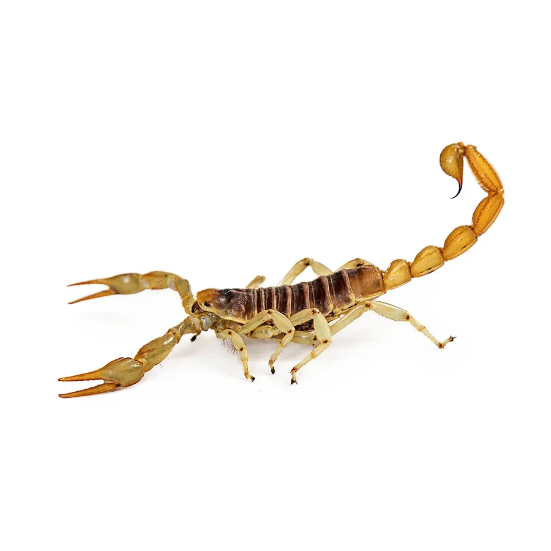
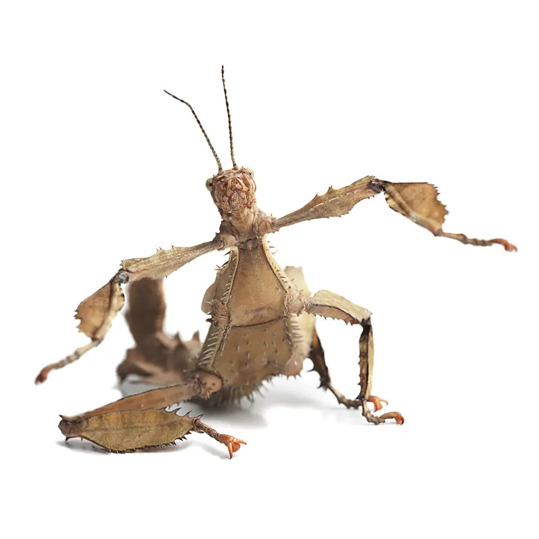
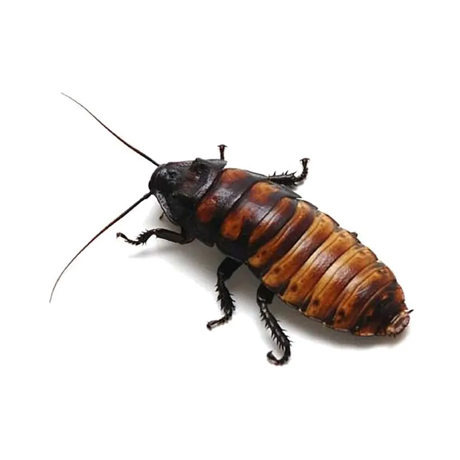
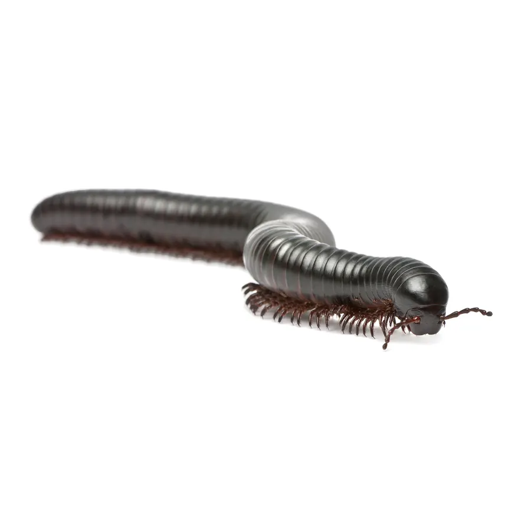
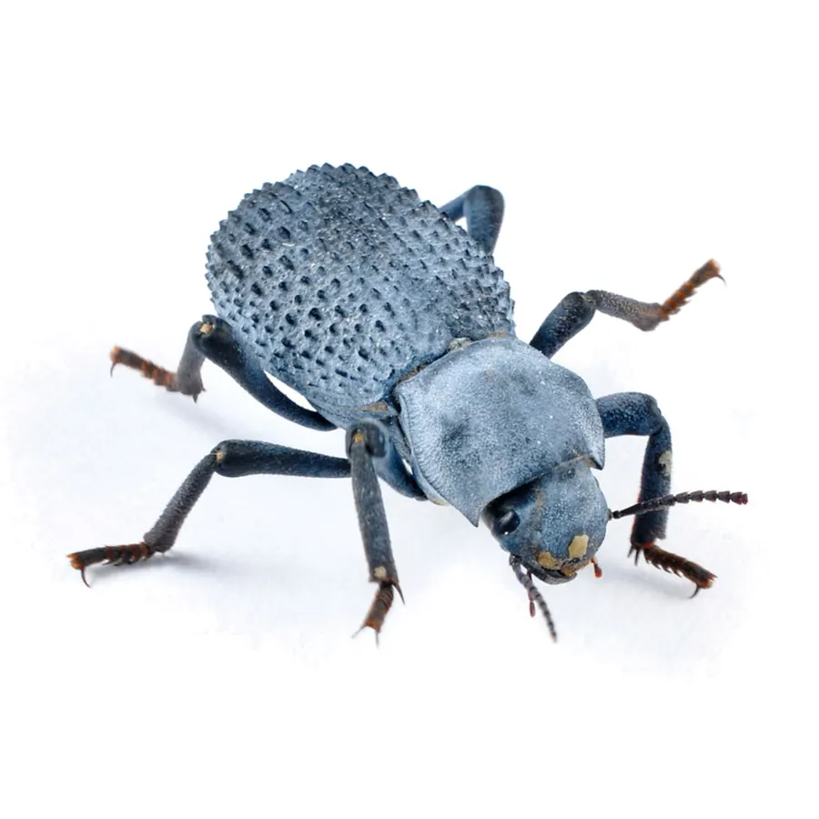
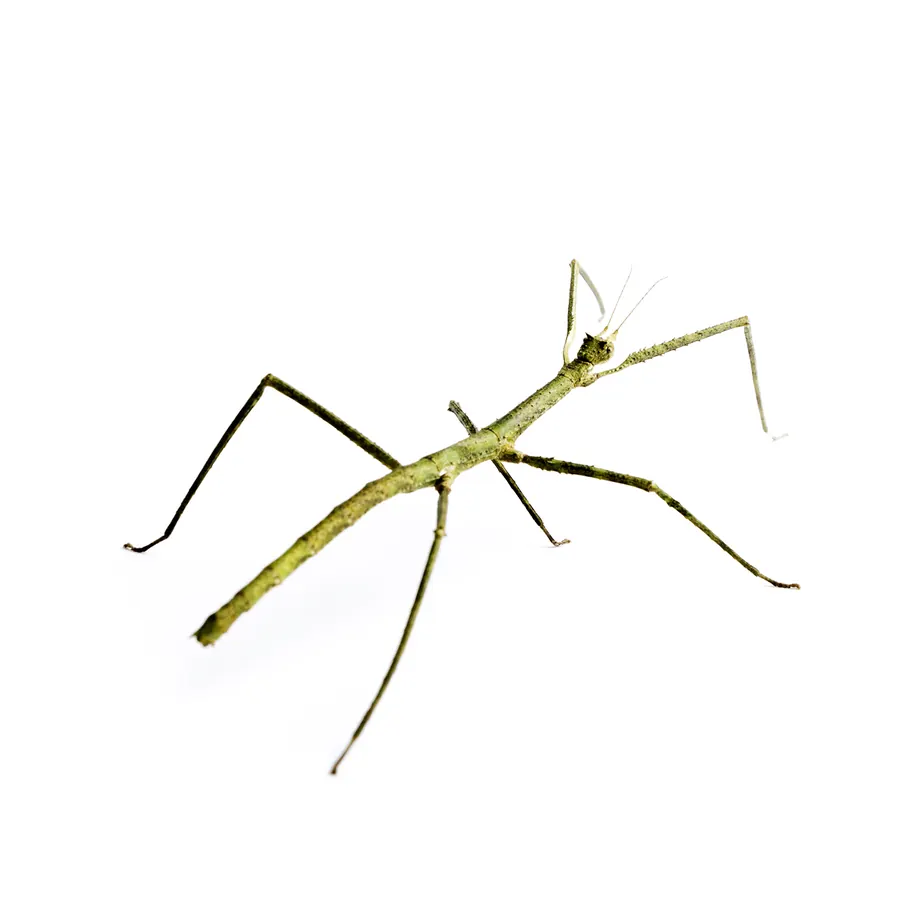
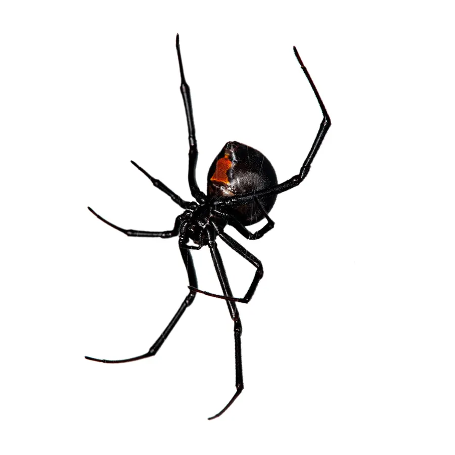
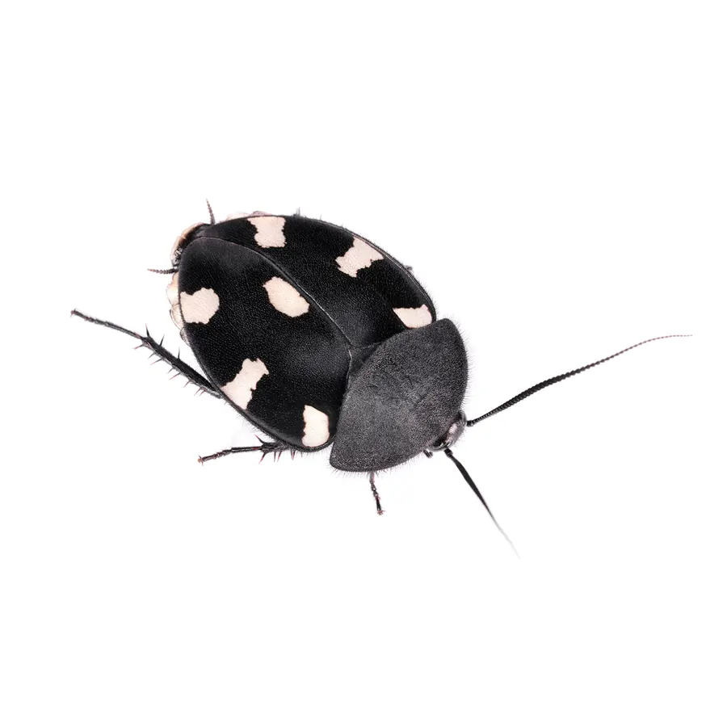
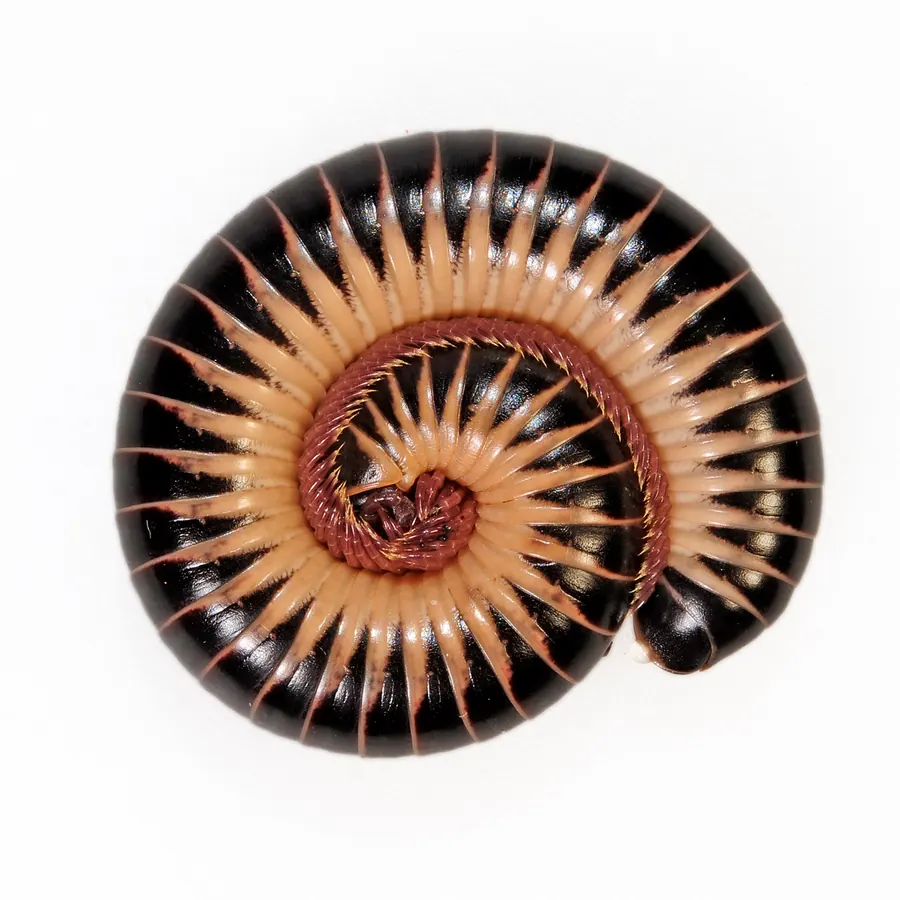

Home / Bug Ambassadors
The Bug Ambassadors
Some of the animals you'll likely meet at field trips, birthday parties and outreach events. Open any label for their field notes.

All ambassadors

Field notes
- Home
- Bolivia, Argentina and northern Chile
- Eats
- Mostly large insects like crickets, grasshoppers, beetles and roaches
- Lives
- 15 to 20 years for females, 1 to 2 for males
Rosies use venom only as a last resort. If pursued, they brush irritating hairs off their abdomen that float like microscopic porcupine quills. They're calm and gentle enough to hold.

Field notes
- Home
- The Sonoran and Mojave deserts
- Eats
- Invertebrates and small vertebrates such as lizards
- Lives
- Reportedly up to 20 years in captivity
The largest scorpions in North America, reaching 5.5 inches. They'd rather flee than fight, and their venom is similar to a bee sting. Burrows can be 8 feet deep.

Field notes
- Home
- Northern Australia and New Guinea
- Eats
- Primarily eucalyptus leaves
- Lives
- Females 9 to 18 months, males 6 to 8
Masters of camouflage that look like dead leaves and sway in the breeze. If threatened they rear up and curl their abdomen like a scorpion's tail. Adult males can fly away.

Field notes
- Home
- Madagascar
- Eats
- Opportunistic scavengers
- Lives
- Usually 2 to 3 years, sometimes 5
They hiss by forcing air out of their fourth pair of breathing holes, not their mouths. Males also hiss to defend territory and to court.

Field notes
- Home
- Tropical Africa
- Eats
- Fresh and decaying plant material
- Lives
- Up to 10 years
The largest millipede species in the world: typical adults are 7 to 9 inches, and the record is 15.2. Three to four hundred legs move in a wave when they walk.

Field notes
- Home
- Southwestern United States
- Eats
- Fresh and decaying vegetation
- Lives
- Up to 10 years
Their wing covers are fused, so they can't fly. A bluish wax over the exoskeleton holds in water and reflects ultraviolet light to keep them cool.

Field notes
- Home
- Vietnam
- Eats
- A variety of leaves
- Lives
- About 6 to 8 months
The whole population is female, yet babies hatch all the time. Females can lay unfertilized eggs that are genetic copies of themselves: parthenogenesis.

Field notes
- Home
- Five species across the U.S. and southern Canada
- Eats
- Almost any insect caught in her web
- Lives
- 1 to 3 years
The most venomous spider in North America, so when she joins outreach events it's eyes only. Black widows aren't aggressive and bite only in defense.

Field notes
- Home
- Southern India
- Eats
- Rotting leaves
- Lives
- Up to 1 year
The bold pattern is thought to mimic an aggressive local ground beetle that sprays an irritating chemical. They use pheromones to warn each other of danger.

Field notes
- Home
- Southeastern United States
- Eats
- Fresh and decaying plant material
- Lives
- 5 to 10 years
Plated segments protect them like armor, and they can coil up to cover their legs and underbelly.
Adopt an animal. Support the care of a favorite ambassador.
See adoptions